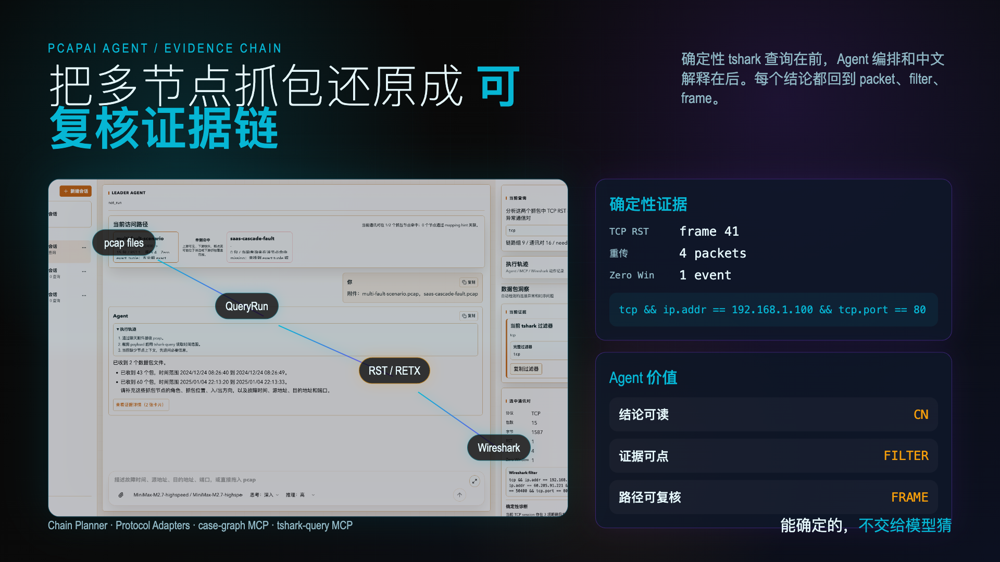
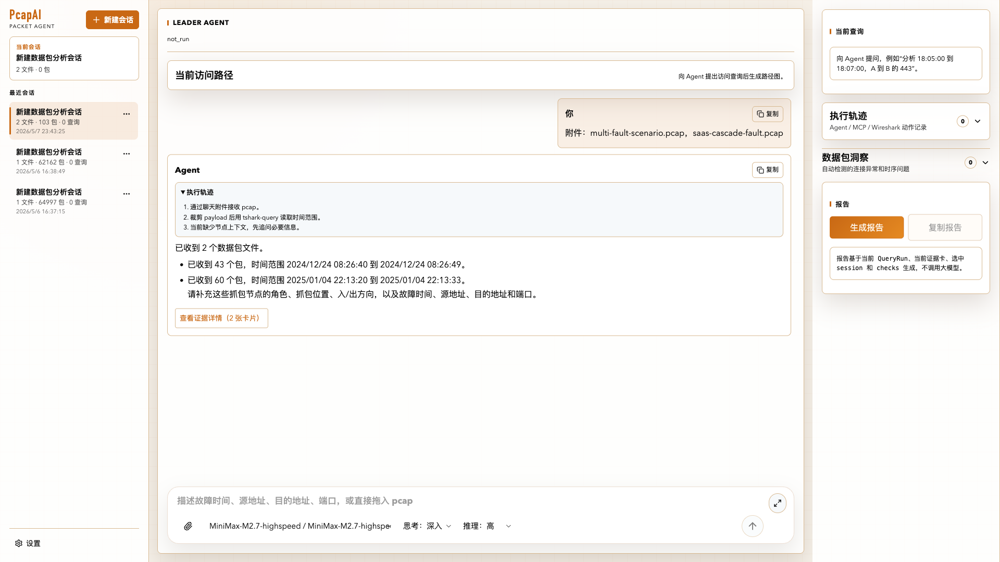
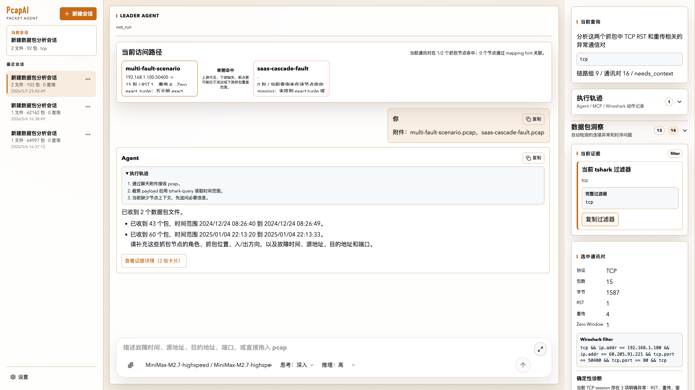
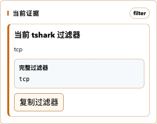
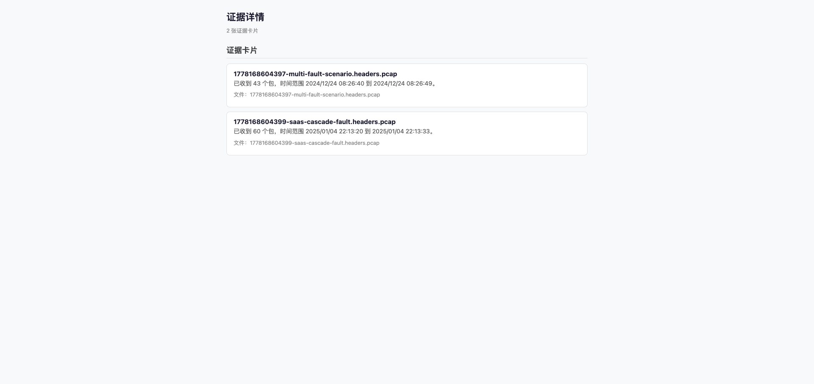

客户端、负载均衡前后、服务端都有 pcap。时间不齐，地址被改写，单点分析只能看到局部。


保存抓包、QueryRun、证据和路径关系。
把问题拆成 2-5 个可执行步骤。
按步骤运行，并在每步后刷新 graph。
case-graph 读上下文，tshark-query 查原始包。
TCP / DNS / TLS / HTTP 先给确定性证据。
组织解释、缺口和下一步建议。



把分散的 pcap、过滤器、协议事件和排障经验，收束成一次可追溯、可复核、可继续追问的分析流程。